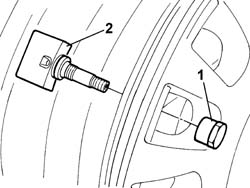

4450B90 TYRE INFLATION PRESSURE SENSOR (ONE)
- Path
- Procedures > 44 SUSPENSION AND WHEELS > 4450 HUBS AND WHEELS > 4450B WHEELS AND COMPONENTS > 4450B90 TYRE INFLATION PRESSURE SENSOR (ONE)
- Kind
- repair procedure (removal / refitting; the operation number is the code)
- Applies to
- all engines; all production periods
- Interactive page
- https://sloeber94.github.io/elrnDB-fUlss/en/#/179007411
Applies to: all engines; all production periods
 Removing
Removing
 Refitting
Refitting- To remove the left front wheel pressure sensor, proceed as described below.
- Position the vehicle on a lift.
Op. 4450B02 LEFT FRONT WHEEL - R.R
- Remove the front tyre.
1. Undo the fixing nut.
2. Remove the tyre pressure sensor.

Applies to: all engines; all production periods
- Proceed in the same way for the removal for the remaining tyre pressure sensors.
Applies to: all engines; all production periods
Refitting
Removing- To refit the left front wheel pressure sensor, proceed as described below.
- Position the tyre pressure sensor.
- Tighten the fixing nut.
- Fit the front tyre.
Op. 4450B02 LEFT FRONT WHEEL - R.R
- Remove the vehicle from the lift.
- Proceed in the same way for the refitting of the remaining tyre pressure sensors.